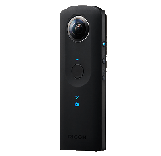

THETA API and JavaScript Dev |
Initialization and API VersionPress "Start Session" first, then "Set to V2 API" Testing and InfoBasicsDownload only works as a test from the last file on my camera. I still need to build a function to grab the file URI and pass it to the download function. Look in index.js to change the fileURI for your tests. |